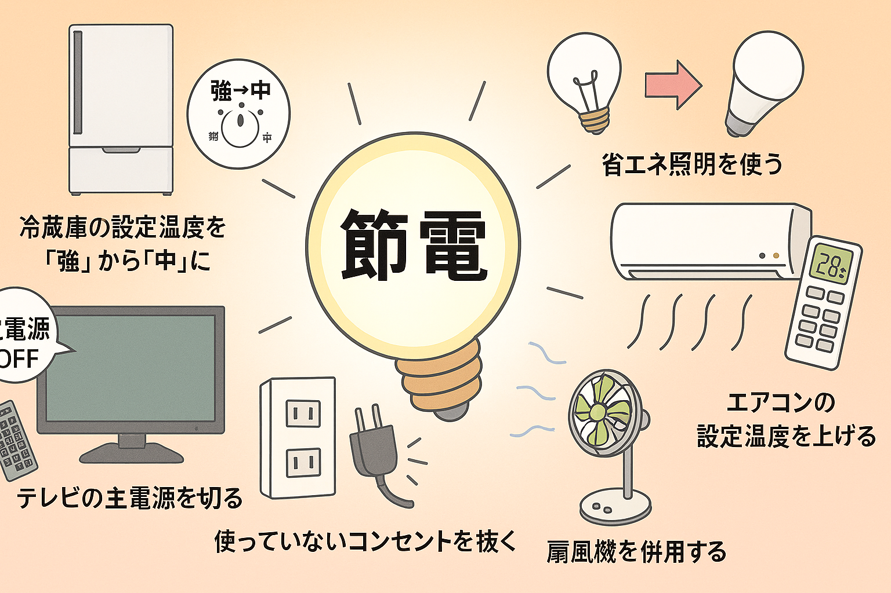

皆様気づいてない節電方法とは？
私たちの⽣活になくてはならない電気。誰しも「電気代はできるだけ節約したい」と思うものです。夏の節電と聞くと 「暑い⽇でもエアコンをつけないで我慢する。」というイメージがあるかもしれませんが、ちょっとした⼯夫で、簡単に節電はできます。 具体的にどうすれば電気代を節約できるのか、 ⽇々の⽣活の中で便利さや快適さをなるべく維持したままでできる節電⽅法を紹介します。
目次
- 1 家電製品別の電力消費の割合は？ ↓
- 2 上手なエアコンの使いかたは？ ↓
- 3 上手な冷蔵庫の使いかたは？ ↓
- 4 上手な照明の使いかたは？ ↓
- 5 家電や生活習慣の工夫のしかたは？ ↓
家電製品別の電力消費の割合は？
「取りあえず昼間の照明を消しているんだけど、節電になっているんだろうか」、 「あまり不便にならずに効果的な節電方法を知りたい」、そんなかたへ手軽にできる夏の節電方法を紹介します。 下のグラフは、夏の19時ごろの家庭での電気の使用割合です。夏の電力消費量は、エアコン、冷蔵庫、照明の3種類で 6割以上を占めていますので、節電の際は、これらの家電をメインに効率よく節電しましょう。
.jpg)
意外と知らない電力の単位と電気料金の計算の方法
「自分がどれだけ電力を使っているのか？」。その量を把握し、おおよその電気代を推測するために、 電力の単位を理解しておきましょう。電力の単位には、家電の仕様書などに記載されている「kW（キロワット）」と、電気代の明細書などに記載されている「kWh（キロワットアワー）」という2つの単位があります。 kW（キロワット）は、使用電力を示す単位です。例えば、30Wの電球の場合、光るためには30Wの電力が必要です。 100Wの電球は、30Wの電球より明るいですが、多くの電力を消費します。kWh（キロワットアワー）は、「kW（キロワット）」に「h（アワー）」を加えた「kWh（キロワットアワー）」で、 電力を1時間、消費または発電した場合の電力量を示す単位です。例えば、消費電力1200Wのドライヤーを10分使用するとしたら1200W×（10分/60分）＝200Wh（0.2kWh）が消費電力量です。 電気料金は、消費電力量から計算できます。この記事中では、1kWhあたりの電気代は、31円/kWh（令和4年7月に公益社団法人 全国家庭電気製品公正取引協議会が発表した新電力料金目安単価）と仮定し計算しています。 例えば、100Wの電球を1時間（1h）つけていた場合、消費電力量は100W×1h＝100Wh＝0.1kWhで、電気料金は0.1kWh×31円＝3.1円となります。もし、24時間つけっぱなしにしていたら、約74.4円、さらに7日間つけっぱなしだと約520.8円が電気料金となり、毎月の電気代に加算されます。 ※実際の1kWhあたりの電気料金は、電力会社やプランで異なっています。利用している電力会社は、1kWhあたりいくらの契約になっているか、電気代の明細書で確認をしてみてください。
上手なエアコンの使いかたは？
カーテンで窓からの熱の侵入を防ごう
夏場の熱気の多くは窓から室内に入り込みます。夏の冷房時に入り込む熱の73％が窓や扉など の開口部からと言われます。カーテンは、日差しを遮るだけでなく、屋外からの熱気も防ぎます。また、冷房の冷気が 逃げるのを防ぐため、冷房が効率的に使えます。外出時にもカーテンを閉め、室内の温度上昇を少しでも抑えましょう。 特に厚手のカーテンや遮熱カーテンだとより効果的です
.jpg)
エアコンのフィルターの掃除はこまめにしましょう
エアコンのフィルターは、2週間に1度をめどに掃除をしましょう。フィルターのほこりは、水洗いをするか掃除機で吸いとりましょう。フィルターが目詰まりしているエアコンでは冷暖房の効果が下がり、無駄な電気を使います。例えば、6畳用（2.2kW）のエアコンのフィルターを清掃した場合、年間で電気31.95kWhの省エネになり、年間で約990円の節約になります。
.jpg)
エアコンの室外機の周りにものを置かない
エアコンの室外機の吹出口に物を置くと、冷房の効果が下がります。室外機の吹き出し口付近やその周辺にものを置いたり、カバーで覆ったりしないよう注意してください。また、室外機に直射日光が当たると、室外機が温まり冷房効果が低下します。できれば植木やすだれなどで日陰を作るようにしましょう。
.jpg)
扇風機やサーキュレーターを併用して空気を循環させよう
空気は、温度が高いと上へ、低いと下へ行こうとする性質があります。そのため、エアコンをつけたときも部屋の下のほうだけが冷たいという「温度むら」ができます。「温度むら」ができていると、エアコンは部屋の上の温かい空気を吸い込んで、まだ部屋が冷えていないと勘違いして部屋を冷やしすぎてしまいます。そこで、エアコンの風向を上方向や水平方向に調整したり、扇風機やサーキュレーターの風を天井へ向けて当てたりして、空気を上から下に循環させましょう。少し暑いと感じたら、まずは設定温度を下げるよりも、エアコンの風量を強くしたり、扇風機やサーキュレーターを一緒に使ったりすると、同じ温度でも体感温度はより涼しく感じます。
.jpg)
外から帰ってきたらまず換気をしよう
外出から帰ってきて、部屋の中が外よりも暑いと感じたときは、エアコンを入れる前に、まず、窓を開けて部屋の換気を行いましょう。換気のコツは、部屋の対角線にある2つの窓を開けて空気の動線を作ることです。部屋の対角線にある2つの窓を開けることで、空気が通りやすくなり部屋全体を換気できます。また、窓が1つしかない部屋の換気は、扇風機やサーキュレーターを窓の外へ向けて設置しましょう。
.jpg)
.jpg)
上手な冷蔵庫の使いかたは？
ムダな開閉はしないで、設定温度は控えめに
冷蔵庫の扉を開けると庫内の冷気が逃げてしまいます。冷蔵庫は再度庫内を冷やそうとして電力を消費します。開閉の回数をできるだけ少なくすると節電につながります。 また､庫内の温度設定を控えめにすると消費電力が小さくなります。設定温度はできるだけ夏は「中」、冬は「弱」に設定しましょう。周囲の温度が22℃の時、設定温度を「強」から「中」にした場合、年間で電気61.72kWhの省エネになり、約1,910円節約できます。（※）
.jpg)
食材を詰め込みすぎない
冷蔵庫内に食材を詰め込みすぎると、吹き出し口からの冷気の流れが悪くなり、庫内が均一に冷えなくなります。庫内の温度が上昇すると余分な冷却運転が必要になり、消費電力が増えます。また、庫内の見通しが悪くなるため、ドアの開閉時間が長くなる原因にもなります。ものを詰め込んだ場合と、半分にした場合を比較すると年間で電気43.84kWhの省エネとなり、約1,360円節約できます。（※） できるだけ庫中を整理しましょう。ずっと前に食べ残した食品が奥で眠っていませんか。「とりあえず保存」は結局何も食べずに捨てられることが多いようです。また、常温で保存できるものを入れたりしていませんか。缶詰、びん詰や調味料は、未開封なら冷蔵庫に入れないようにしましょう。
.jpg)
.jpg)
熱いものは冷ましてから入れよう
麦茶やカレーなど熱いものをそのまま冷蔵庫に入れていませんか？庫内の温度が上がり、冷やすのに余分なエネルギーが消費されてしまいます。ほかの食品にも悪影響を及ぼすため、熱いものは冷ましてから入れましょう。
冷蔵庫は壁から適切なスペースを取って設置しよう
冷蔵庫は、庫内を冷やすために外に放熱をします。冷蔵庫の周囲が壁などに接していると効率よく放熱できませんので、放熱のため周囲に隙間（放熱スペース）を空けましょう。冷蔵庫の設置に必要な放熱スペースは、一般的には、冷蔵庫の側面0.5cmから2cm、上部5cmから30cm以上と言われていますが、背面にも隙間が必要な機種もありますので、詳しくは説明書やカタログで確認してください。上と両側が壁に接している場合と片側が壁に接している場合と比較すると、年間で電気45.08kWhの省エネとなり、約1,400円節約できます。（※）
.jpg) ※冷蔵庫の大きさは400L程度、消費電力200kWh/年程度を想定
※冷蔵庫の大きさは400L程度、消費電力200kWh/年程度を想定
上手な照明の使いかたは？
照明器具の掃除で明るさアップ
ランプやかさが汚れると、明るさは極端に低下します。ダイニングキッチンなどの汚れやすい場所の照明は、こまめにお手入れしましょう
.jpg)
点灯時間を短くしよう
必要のない明りはこまめに消しましょう。長時間部屋を空けるときは消した方が経済的です。ただし、蛍光ランプの場合は、極端に頻繁に点滅させるとランプの寿命が縮むので注意しましょう。
- 7.5Wの電球形LEDランプ1灯の点灯時間を1日1時間短縮した場合、年間で電気2.74kWhの省エネになり、約85円節約できます
- 34WのLED照明器具1灯の点灯時間を1日1時間短縮した場合、年間で電気12.41kWhの省エネになり、約385円節約できます
電球形LEDランプに取り替える
- 54Wの白熱電球から7.5Wの電球形LEDランプに交換（年間2,000時間使用）、年間で電気93.00kWhの省エネになり、約2,883円節約できます。
- 12Wの蛍光ランプから7.5Wの電球形LEDランプに交換（年間2,000時間使用）、年間で電気9.00kWhの省エネになり、約279円節約できます。s
家電や生活習慣の工夫のしかたは？
テレビでは？
省エネモードに設定し、画面の輝度を下げ、必要な時間以外は消しましょう。 リモコンの電源ではなく、本体の主電源を切り、旅行などで長時間使わない場合はコンセントからプラグを抜きましょう 。テレビゲーム後にはゲームの電源だけでなく、忘れずにテレビの主電源も消しましょう。
洗濯では？
洗濯は容量の80％程度を目安にまとめ洗いをしましょう。また、衣類乾燥機や浴室乾燥機は、部屋干しと併用して使用時間を短くしましょう。
トイレでは？
夏は、できるだけ温水洗浄便座の使用を控えましょう。または、温水のオフ機能やタイマー節約機能を利用しましょう。 そういった機能がない場合、使わないときはコンセントからプラグを抜きましょう。
ライフスタイルでは？
家族そろってリビングで過ごし、人のいない部屋の照明・エアコンを消すなど、少しの生活習慣の見直しが省エネ・節電につながります。
(取材協力：経済産業省・環境省.文責：政府広報オンライ)